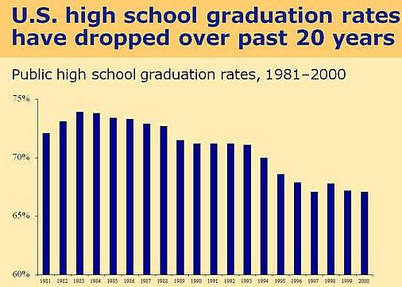
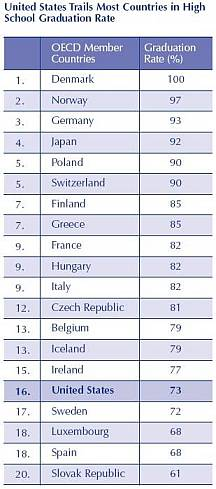

Weitere Datenübertragung Ihres Webseitenbesuchs an Google durch ein Opt-Out-Cookie stoppen - Klick!
Stop transferring your visit data to Google by a Opt-Out-Cookie - click!: Stop Google AnalyticsCookie Info.Datenschutzerklärung
The American high school system:
Facts and evaluation III
Facharbeit aus dem Fach Englisch
School Thesis In The Subject English
am Meranier-Gymnasium Lichtenfels 25.01.2008
In htm codiert und mit Videos ergänzt von Konrad Fischer
Table of contents
1 Introduction
1.1 A preliminary remark
1.2 The Pledge of Allegiance
1.3 The K-12 educational system
1.4 Typical progression of a school career
1.5 Choosing a school
2 The high school system
2.1 School grades
2.2 School organization
2.3 Basic curricular structure
2.4 Graduation requirements
2.5 Advanced Placement Program
2.6 Grading scale
2.7 Standardized testing
2.8 Extracurricular activities
2.9 Associated Student Body
2.10 School uniform
2.11 Students with special needs
2.12 Private or state schools
2.13 Becoming a high school teacher
3 Evaluation: strengths and weaknesses of this system
3.1 Interview with Mr. Berry, teacher at Healdsburg High School
3.2 The “No Child Left Behind Act”
3.3 Personal evaluation
4 Conclusion: opportunities after high school
5 Bibliography
3 Evaluation: strengths and weaknesses of this system
3.1 Interview with Mr. Berry, teacher at Healdsburg High School
While visiting the Healdsburg High School in June 2007, I interviewed
Mr. Berry (67), a teacher for civics/economics.
Author: “Tell
me, Mr. Berry, when did you graduate from high school and
how was your school experience?”
Mr. Berry: “I
finished high school in 1957. I liked it being in school - being a
student. At that time, there was definitely more flow in our school.
Students communicated on a different level and were glad to be
able to attend a school. There weren´t any exchange students.
We didn’t know a lot about the rest of the world outside
California. Today it´s much more formal.”
Author: “How long have you been working as a teacher?”
Mr. Berry: “Quite long - for 44 years now! I basically live in school; school´s my life.”
Author: “During this period of time, was there an outstanding event or anything that
affected American education?”
Mr. Berry: “Indeed, there was - The Proposition 13 in 1978! That really was a political
earthquake, which was felt not just in California, but all across the
nation. The initiative to cut California´s notoriously high
property taxes really affected and hurt the financial
situation for communities, schools, police, libraries and so on. In the
1960s, California state schools had been ranked number one nationally
in student achievement and now have fallen to 48th in many surveys of
student achievement.”
As the interview shows, the Proposition 13 was an event which severely
hurt the educational progress in the United States.
By the early 1980s, the high school graduation rates have begun to fall
from 74 percent in 1983 to 67 percent in 2000.

Source: Mortenson, T., “Chance
for College by Age 19 by State in 2000”,
Postsecondary Education Opportunity: The Environmental Scanning
Research Letter of Opportunity for Postsecondary Education, No. 123,
The Mortenson Research Center on Public Policy, September 2002.
3.2 The “No Child Left Behind Act”
The No Child Left Behind Act, which was passed on May 23,
2001 aims “to improve the performance of U.S. primary and secondary schools by
increasing the standards of accountability for states, school districts
and schools, as well as providing parents more flexibility in choosing
which schools their children will attend.” Teachers must have the qualification to assist every single student and
improve its capability of learning.
According to a video of the US Department of Education´s
webpage, today a college education is more important than ever before.
Not only for individual success, but also for the nation’s
ability to compete in the global economy. However, in the United
States, only eighteen out of every 100 high school graduates actually finish college.
The No Child Left Behind Act “has helped principals and
teachers focus on the things that bring results”:
High standards for all students
A rigorous curriculum
High-quality teaching
Careful assessments
Actively involved parents
Those things prepare students to be able not only to enter a
university, but also to graduate from a university.
While 90 % of the fastest growing jobs require a postsecondary
education, only 1/3 of Americans have a degree. To be successful in the
21st century economy, a nation must prepare all students for the
demands of higher education. The need is great especially in urban
settings where poverty, language differences and a lack of opportunity
limit access to higher education.
3.3 Personal evaluation
After attending an American high school for one year, I am by far no
expert in terms of school systems. However, this section covers a
personal evaluation based on my experience.
Due to the fact that high school in the US is not divided into Gymnasium, Realschule and Hauptschule,
as in Germany, and that high school students create their individual
class schedule, there is no separation of students in terms of
intellectual levels and this contributes to an atmosphere of low
academic motivation and thus to lower competition.
On the other hand, because students can create their
own class schedules depending on their preferences and future plans,
those students who are willing to attend university are able to choose
more difficult and competitive classes and participate in classroom
activities with more commitment.
By contrast, in German Gymnasium, pupils cannot plan their own schedule, but follow a strict path down
the stream of education with the “Abitur” as
their final goal instead. An example for this is that students who are
hopeless at math actually do not have any choice not to enroll in math
classes, whereas students in an American high school can choose between
greatly reduced math or an intensive math course, like an AP Calculus
course, that every student attends with a much greater motivation.
By offering many different elective courses, students in America are
able to broaden their horizon, get to know their personal interests and
delve into them. For example, while attending Healdsburg High School, I
took a course named “Auto Body”, where students learn to work on cars and
repaint them. In my opinion, because of the choices offered, the
majority of American high school graduates know rather well what they
want to do or what professional choices they will take later in life.
German graduates frequently do not.
Healdsburg High School Automotive Video
I got the impression that my friends in the United States liked going
to school better than my friends in Germany.
Healdsburg High Fight November 9, 2007
That is probably because in American high schools, many more
extracurricular activities, like sports and clubs, are offered, that
keep the students busy throughout the school day and many times
afterwards as well. Therefore, students who are involved in those
extracurricular activities commonly spend the entire day at school together.
During rallies or sporting events, American students cheer for their
school, which shows that they identify with their school and are proud of it.
With the large amount of financial resources offered by organizations
and foundations, many American students who are not even at the top of
the class are able to receive scholarships and commendatory
distinctions of all kinds. Whereas in Germany only the top students
receive awards or scholarships that help them financing a university education.
However, the tuition fees for German colleges or universities are a lot
lower in comparison to those in the United States. To study at a more
prestigious university in California, parents have to pay up to 40.000
US dollars per year for their children’s education. The
better reputation a university has, the more expensive it is! It seems
that only wealthy and rich people can afford attending a better
university and receiving a better education. It is necessary that
support to low-performing students is provided. “There are students in
every community - urban, rural and suburban - whose needs are not being
met adequately by their high schools.”
Those kids at risk of failure must receive the help they need in order
to pass. Schools should adopt intensive assistance strategies like
specific courses for struggling students.
Source: Jay P. Greene, Public High School Graduation and College
Readiness Rates, 1991-2002, 2005.
Compared to German schools, in the United States, there is a complete
lack of respect towards the teacher but simultaneously students have
many rules that are imposed on them. For instance, at Healdsburg High
School, and in many other high schools, students need a permission slip
if they want to go to the toilet.
Even some Americans do not see the four years of attending high school
as a positive experience. My host sister, Simone Wilson, who is now
editor of the Guardian, the newspaper at the University of California, San Diego, gives the following statement:
“High school in Healdsburg and in
the rest of California, and probably the United States is about getting
into college. Not once in my senior year English/Literature class did
we learn something for the sake of knowledge; our novels and activities
were in strict orbit around either the SATs (a huge university
acceptance factor) or the AP test at the end of the year, which offered
a chance to earn credits for a college degree. All but one of my
teachers were completely stripped of the negative and critical gene,
and instead served as a second set of coddling parents, trying to nudge
up our confidence enough to spill over into the college entrance
essays. It is fascinating to think that every kid in the country is
being drilled with the same random, executively decided parameters for
what makes a poem correct or what defines a classic, mandatory novel.
Then, of course, there are the students not shooting for college, just trying to obtain the
diploma that will hopefully be enough to save them from a life of
minimum wage. There is absolutely a lack of enthusiasm for the mediocre
students´ education at Healdsburg, especially the
Mexican-American population, which makes up at least half the student body.”

The
United States of America is a melting pot consisting of many different
cultures. In addition to this, because all children attend only one
type of school, in which a common level must be found, where all
students are able to keep up, it is also a “melting pot”
for various levels of intelligence. This infers to an inferior aspiration level.
As far as I can see, the educational level in Germany is much more
demanding than in the United States.
As the paper shows, the high school system in the United States is not
so bad after all, but the overall objective of a “good”
school actually should be to equip children with a knowledge necessary
to prepare them for their life after school. In my opinion, in Germany,
this is achieved in a better way.
4 Conclusion: opportunities after high school
While there are many opportunities after high school, the American high
school student must think about these things before
graduating. During one’s junior year, a bombardment
of presentations, lectures, pamphlets and brochures on universities and
colleges are presented and mailed to students. Many
universities acquire information from the pre-SAT and other
standardized tests in order to deliver information to the
student’s home as well as email. Not only universities are
using standard information from tests, but also vocational schools,
armed forces recruiters, and nonprofit organizations that offer once in
a lifetime experiences in remote places of the world.
Other students who may not be ready, may not want to go to a four-year
university, or to learn a trade at a vocational school, but may decide
to simply begin working. Others may have no other choice as a higher
education in the United States is not affordable to everybody and
scholarships are very competitive. A more affordable community college
is often the answer to many who are not ready to move on to a more
demanding four year university. A community college provides equivalent
and transferable courses to most state and private universities in an
often smaller and considerably cheaper institution.
Image Source: Organisation for Economic Co-operation and Development, Education at a Glance 2004, 2004.
5 Bibliography
- Glasser, William: The Quality School. Managing Students Without Coercion. New York: HarperPerennial, 1998
- Healdsburg High School: Healdsburg High School 2006-2008 Course Catalog. Healdsburg: N.p., 2006
- Healdsburg High School: Healdsburg High School Profile. Healdsburg: N.p., 2007
- Healdsburg High School: Healdsburg High School Student Handbook 2006-2007. Healdsburg: N.p., 2006
- Hirsch, Eric Donald, Jr.: The schools we need and why we don’t have them. New York: Anchor Books, 1999
- McCluskey, Neal P.: Feds in the Classroom. How Big Government Corrupts, Cripples, and Compromises American Education. United States
of America: Rowman & Littlefield Publishers, 2007
- McCormack, Don, and Van Landingham, John: How California Schools Work. A Practical Guide for Parents. N.p., McCormack's Guides, 2004
- Microsoft Corporation: Kindergarten. Microsoft Encarta 2007 – Lernen und Wissen DVD. N.p., 2007
- Minnetonka High School: Skipper Log. Charting your course for
success. Minnetonka High School 2006 Course Catalog. N.p., 2005